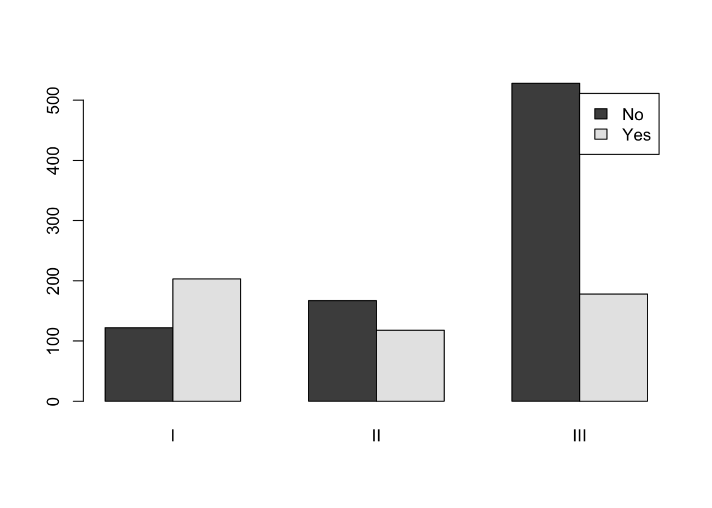
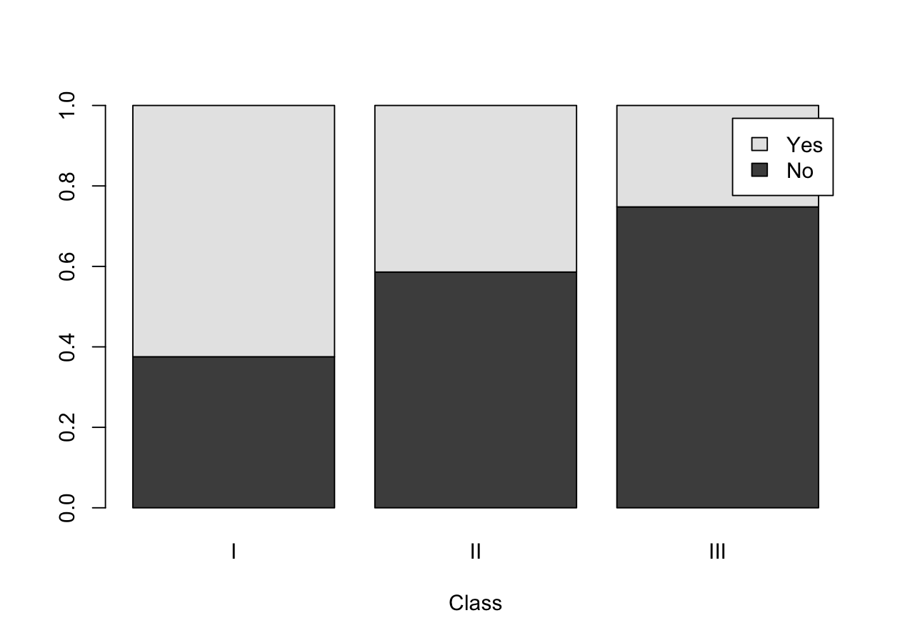
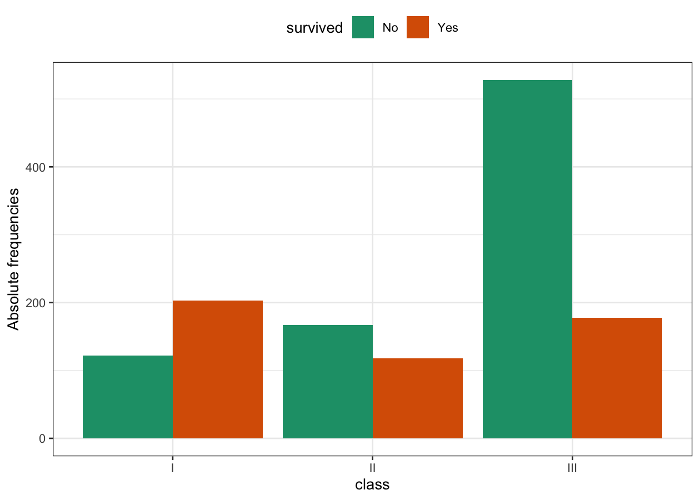
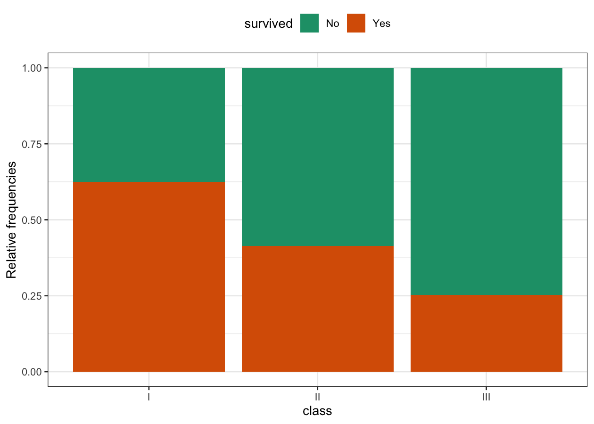

titanic <- read.table("data/titanic.csv",
header = TRUE, sep = ",", stringsAsFactors = TRUE
)Descriptive analysis of the titanic data
Programming and Data Analysis with R
Homepage
Topics covered
- Qualitative data
- Contingency tables
- Conditional distributions
- Independence and the \chi^2 index of association
Description of the problem
After the Titanic disaster, a commission of inquiry of the British Board of Trade compiled a list of all the 1316 passengers, including the following information:
- the outcome (saved, not saved)
- the class (I, II, III) in which they travelled
- sex, age, and so on.
In this unit we limit ourselves to considering the information on the survived outcome and the class.
Importing the titanic data
As done previously, first of all you need to download the file titanic.csv and save it on your computer. Link to the file
Alternatively, we can simply obtain them using the link:
path <- "https://tommasorigon.github.io/EnvEcoStat/data/titanic.csv"
titanic <- read.table(path, header = TRUE, sep = ",", stringsAsFactors = TRUE)str(titanic)'data.frame': 1316 obs. of 2 variables:
$ survived: Factor w/ 2 levels "No","Yes": 2 2 2 2 2 2 2 2 2 2 ...
$ class : Factor w/ 3 levels "I","II","III": 1 1 1 1 1 1 1 1 1 1 ...Absolute and relative (marginal) frequencies
We can obtain the (marginal) absolute frequencies of the two variables using the command summary:
summary(titanic) survived class
No :817 I :325
Yes:499 II :285
III:706 Of course, we can obtain the absolute and relative frequencies also using the command table. For example for the variable class, we can use:
freq_abs_class <- table(titanic$class)
freq_rel_class <- freq_abs_class / sum(freq_abs_class)
tab_summary <- cbind(freq_abs_class, freq_rel_class)
tab_summary freq_abs_class freq_rel_class
I 325 0.2469605
II 285 0.2165653
III 706 0.5364742Joint frequencies
A summary we can produce consists in building a table, called a contingency tableortwo-way table.
In R one uses, also in this case, the command table, with two arguments:
tab <- table(titanic$survived, titanic$class)
tab
I II III
No 122 167 528
Yes 203 118 178In this table the joint frequencies are reported: for example, the value 203 represents the number of passengers who travelled in first class and who survived.
Contingency table
Let x and y be two variables having categories c_1,\dots,c_h and d_1,\dots,d_k, respectively.
A contingency table (for two variables) for the pairs of data (x_1,y_1),\dots,(x_n,y_n) takes the following form:
| Variable y | ||||||
|---|---|---|---|---|---|---|
| Variable x | d_1 | \dots | d_j | \dots | d_k | Total |
| c_1 | n_{11} | \dots | n_{1j} | \dots | n_{1k} | n_{1+} |
| \vdots | \vdots | \vdots | \vdots | \vdots | ||
| c_i | n_{i1} | \dots | n_{ij} | \dots | n_{ik} | n_{i+} |
| \vdots | \vdots | \vdots | \vdots | \vdots | ||
| c_h | n_{h1} | \dots | n_{hj} | \dots | n_{hk} | n_{h+} |
| Total | n_{+1} | \dots | n_{+j} | \dots | n_{+k} | n |
The frequency n_{ij} is the number of statistical units that simultaneously present the categories c_i and d_j.
Contingency table, relative frequencies
Dividing each term of the previous table by n, one moreover obtains:
| Variable y | ||||||
|---|---|---|---|---|---|---|
| Variable x | d_1 | \dots | d_j | \dots | d_k | Total |
| c_1 | f_{11} | \dots | f_{1j} | \dots | f_{1k} | f_{1+} |
| \vdots | \vdots | \vdots | \vdots | \vdots | ||
| c_i | f_{i1} | \dots | f_{ij} | \dots | f_{ik} | f_{i+} |
| \vdots | \vdots | \vdots | \vdots | \vdots | ||
| c_h | f_{h1} | \dots | f_{hj} | \dots | f_{hk} | f_{h+} |
| Total | f_{+1} | \dots | f_{+j} | \dots | f_{+k} | 1 |
The relative frequency f_{ij} = n_{ij} / n is therefore the fraction of observations that simultaneously present the categories c_i and d_j.
Joint & marginal frequencies
The tables described in the previous sections are obtained in R as follows:
addmargins(tab) # Adds the (absolute) marginal distributions
I II III Sum
No 122 167 528 817
Yes 203 118 178 499
Sum 325 285 706 1316tab_rel <- prop.table(tab) # Alternative command: table(tab) / sum(tab)
tab_rel
I II III
No 0.09270517 0.12689970 0.40121581
Yes 0.15425532 0.08966565 0.13525836addmargins(tab_rel) # Adds the relative marginal distributions
I II III Sum
No 0.09270517 0.12689970 0.40121581 0.62082067
Yes 0.15425532 0.08966565 0.13525836 0.37917933
Sum 0.24696049 0.21656535 0.53647416 1.00000000Conditional distributions I
Conditional distribution (x \mid y = d_j)
The j-th column shows the distribution of x conditional on y = d_j or, equivalently, the distribution of x given y = d_j.
| Distribution x \mid y = d_j | c_1 | \dots | c_i | \dots | c_h | Total |
|---|---|---|---|---|---|---|
| Absolute frequencies | n_{1j} | \dots | n_{ij} | \dots | n_{hj} | n_{+j} |
| Relative frequencies | n_{1j} / n_{+j} | \dots | n_{ij} / n_{+j} | \dots | n_{hj} / n_{+j} | 1 |
Conditional distribution (y \mid x = c_i)
The i-th row shows the distribution of y conditional on x = c_i or, equivalently, the distribution of y given x = c_i.
| Distribution y \mid x = c_i | d_1 | \dots | d_j | \dots | d_k | Total |
|---|---|---|---|---|---|---|
| Absolute frequencies | n_{i1} | \dots | n_{ij} | \dots | n_{ik} | n_{i+} |
| Relative frequencies | n_{i1} / n_{i+} | \dots | n_{ij} / n_{i+} | \dots | n_{ik} / n_{i+} | 1 |
Conditional distributions II
The command prop.table also makes it possible to compute the relative conditional frequencies.
The distribution of each class, conditional on the outcome, is:
prop.table(tab, 1)
I II III
No 0.1493268 0.2044064 0.6462668
Yes 0.4068136 0.2364729 0.3567134The distribution of each outcome, conditional on the class, is:
prop.table(tab, 2)
I II III
No 0.3753846 0.5859649 0.7478754
Yes 0.6246154 0.4140351 0.2521246Graphical representations
It is possible to represent the data of a contingency table graphically through a bar chart, which in R is implemented through the command barplot.
A graphical representation of the joint frequencies is therefore the following:
barplot(tab, beside = TRUE, legend.text = TRUE) # beside = TRUE places the bars side by side
If we were interested in showing the conditional frequencies, we can instead use:
barplot(prop.table(tab, 2),
beside = FALSE,
xlab = "Class",
legend.text = TRUE
) # beside = FALSE stacks the bars.
Advanced graphical tools (optional)
The ggplot2 package
So-called R base contains a wide range of graphical representations. Nevertheless, an R graphical package called ggplot2 has recently gained considerable popularity.
Let us first load it into memory:
library(ggplot2)Then, the first plot shown above can be obtained with the syntax:
ggplot(data = titanic, aes(x = class, fill = survived)) +
geom_bar(position = "dodge") +
theme_bw() +
theme(legend.position = "top") +
scale_fill_brewer(palette = "Dark2") +
ylab("Absolute frequencies")
And the second one:
ggplot(data = titanic, aes(x = class, fill = survived)) +
geom_bar(position = "fill") +
theme_bw() +
theme(legend.position = "top") +
scale_fill_brewer(palette = "Dark2") +
ylab("Relative frequencies")
Summary exercise
The contingencies are equal to the difference between observed frequencies and expected frequencies, under the hypothesis of independence: (\text{contingency}_{ij}) = n_{ij} - \hat{n}_{ij}, \qquad i=1,\dots,h,\quad j=1,\dots,k.
Recall that, under independence, the expected frequencies are \hat{n}_{ij} = n_{i+} n_{+j} / n.
The \chi^2 index of association is defined as \chi^2 = \sum_{i=1}^h\sum_{j=1}^k \frac{(n_{ij} - \hat{n}_{ij})^2}{\hat{n}_{ij}} = n\left(\sum_{i=1}^h\sum_{j=1}^k\frac{f_{ij}^2}{f_{i+}f_{+j}} - 1\right).
Write an R function called chi_squared(x, y) that computes Pearson’s \chi^2 index.
Solution
chi_squared <- function(x, y) {
nn <- table(x, y)
n <- sum(nn)
ff <- nn / n # Joint relative frequencies
f_x <- table(x) / n # Marginal relative frequencies of x
f_y <- table(y) / n # Marginal relative frequencies of y
S <- 0
for (i in 1:length(f_x)) {
for (j in 1:length(f_y)) {
S <- S + ff[i, j]^2 / (f_x[i] * f_y[j])
}
}
n * (S - 1)
}
chi_squared(titanic$survived, titanic$class) No
133.052 Solution (alternative, more concise)
The following solution makes use of the functions apply and outer.
chi_squared <- function(x, y) {
nn <- table(x, y)
n <- sum(nn)
ff <- nn / n
f_x <- apply(ff, 1, sum)
f_y <- apply(ff, 2, sum)
f_e <- outer(f_x, f_y) # "Outer" product between vectors
n * (sum(ff^2 / f_e) - 1)
}
chi_squared(titanic$survived, titanic$class)[1] 133.052Finally, note that the function chisq.test produces the same result.
chisq.test(table(titanic$survived, titanic$class))
Pearson's Chi-squared test
data: table(titanic$survived, titanic$class)
X-squared = 133.05, df = 2, p-value < 2.2e-16